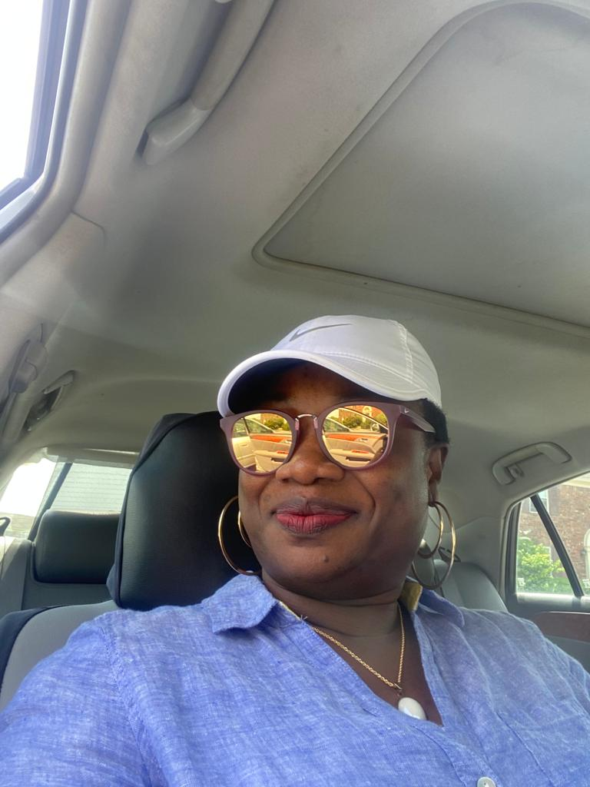

Happy birthday, the love of our Lives!
Because it's your birthday, we created this webpage to bare our minds and tell you just how amazing you are, we'd like you to think of it as a little cute letter to you, and we plan to update for every of your incoming birthdays.
Every year we celebrate your birthday but we're the one who gets the presents which is the gift of having you in our lives. Personally, I know it doesn't get much lovelier than this anywhere else. My sisters and I are massively blessed to be your children and this is an opportunity we will never ever take for granted. As you get older, we pray that God continues to shine his light on you, keep you for us, protect you and bless you with genuine happiness. We wish you a year filled with love, fullfilment, pleasant surprises and amazing health. I love you so much mum. Happy Birthday My Angel.
No one can love me more, no one can understand me better than you do. No one can inspire me more, no one can hug me as warmly as you do. Happy birthday, mom Your place in my heart is so big that it is overflowing with my love for you. Happy Bday, Mom! Mom I want you to know that I am nothing without you, but I can be everything with you by my side. Love you! Mummy, I remember how you brushed my hair, kissed my cheeks and read fairytales every evening. You made my whole life a beautiful, happy story, I can’t be grateful enough for this. You are my everything. Happy Birthday. It’s hard to take credit for any of the successes I have in life. As hard as I have worked to become the best I can be, you worked even harder to help me reach my dreams. Thank you and Happy Birthday, Mother! Happy Birthday to the most lovable mother in the world. May God let your life filled with boundless joy! You are the best mom in the whole world. I love you. I hope you have a great day and a wonderful year ahead. Happy Birthday. You’ve always been the wind that helped the boat of my life sail through high tides, choppy waters, and endless storms. Happy birthday, mom I see my angel in you; you are my superhero; you are my blessing and good luck in my life. On this special day, I want to thank you and wish happy birthday. Dear Mom, thank you so much for all that you do for me. Have a happy birthday, and blessings for the year to come. Being a mother is one of the hardest and most important jobs in the world. I am so grateful to have you as mine. I love you, Mom. Have a wonderful birthday! When I wasn’t true to my self, you told me to listen to my heart while others were egging me on to do stuff that I never wanted to. Thanks, mom, for that and everything! Happy birthday My moms smile keeps everyone strong, her words keep everyone grounded, and her spirit lifts us up when the world gets low. To the most amazing woman in the world, Wonderful Birthday Mom! Mom you are the best mum in the it’s so amazing seeing you as a mother “Apple of my eyes” Mom you are my super hero who want to make things better for the children not to make a lot of mistakes and being a prayer warrior, praying and advicing the children to never give up on God Love you mum
To my darling mother , the strongest person i know, happy birthday. I hope you get all the happiness you truly deserve because you are a great person. Never for once caught you lacking or breaking down, not because you don’t want to but because you don’t want us to see you like that. You are truly a wonderful person and if there is someone that still hasn’t seen your beauty both in and out and appreciated you enough for it then that is their . I love you so much and i wish you the very best in life , you have always been there for us whenever you are needed You are the most emotionally strong person i have come across with. You have such a loving spirit and a big heart that it amazes me all the time . You have been through a lot but it has never stopped you from showing up when problem comes up. You have such a beautiful soul that makes you the queen above all and you shall conquer in Jesus name . You deserve every good things that comes your way and i pray that as your children, we will never you In Jesus name. You are the best mother anyone could ask for , a gem , a rare one . We love you so so much and i hope you realize that no amount of appreciation can thank you enough for your presence in our lives .Once again, i am thankful that you were the one to bring me to life and if i could choose over and over again, it would be you mom and if i haven’t mentioned it before , you truly deserve all the happiness the world can give that’s how much of a great person you are. I wish you a fun filled birthday, love ya